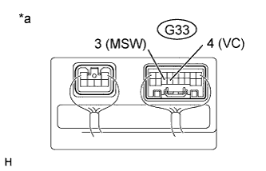
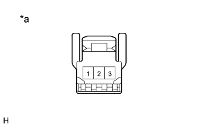

DTC B2603 Tilt and Telescopic Manual Switch Circuit Malfunction |
| DTC Code | Detection Condition | Trouble Area |
| B2603 | When operating the tilt and telescopic switch, an abnormal voltage value is input to the multiplex tilt and telescopic ECU. |
|
| 1.READ VALUE USING INTELLIGENT TESTER (TILT UP/DOWN SWITCH, TELESCO SHORT/LONG SWITCH) |
Use the Data List to check if the tilt and telescopic switch is functioning properly.
| Tester Display | Measurement Item/Range | Normal Condition | Diagnostic Note |
| Tilt Up Switch | Input state of tilt up by manual switch/ON or OFF | ON: Tilt up activated by manual switch OFF: Tilt up not activated by manual switch | - |
| Tilt Down Switch | Input state of tilt down by manual switch/ON or OFF | ON: Tilt down activated by manual switch OFF: Tilt down not activated by manual switch | - |
| Telesco Short Switch | Input state of telescopic short by manual switch/ON or OFF | ON: Telescopic short activated by manual switch OFF: Telescopic short not activated by manual switch | - |
| Telesco Long Switch | Input state of telescopic long by manual switch/ON or OFF | ON: Telescopic long activated by manual switch OFF: Telescopic long not activated by manual switch | - |
|
| ||||
| OK | |
| 2.CONFIRM DTC |
Clear the DTCs (Click here).
Check for DTCs (Click here).
| Result | Proceed to |
| DTC is output | A |
| DTC is not output | B |
|
| ||||
| A | ||
| ||
| 3.CHECK HARNESS AND CONNECTOR (MULTIPLEX TILT AND TELESCOPIC ECU - HEADLIGHT DIMMER SWITCH) |
Disconnect the G33 multiplex tilt and telescopic ECU connector.
Disconnect the G31 headlight dimmer switch connector.
Measure the resistance according to the value(s) in the table below.
| Tester Connection | Condition | Specified Condition |
| G33-4 (VC) - G31-8 (VC) | Always | Below 1 Ω |
| G33-3 (MSW) - G31-10 (MSW) | ||
| G31-8 (VC) - Body ground | Always | 10 kΩ or higher |
| G31-10 (MSW) - Body ground |
|
| ||||
| OK | |
| 4.CHECK MULTIPLEX TILT AND TELESCOPIC ECU (VC TERMINAL VOLTAGE) |
|  |
Reconnect the G33 multiplex tilt and telescopic ECU connector.
Measure the voltage according to the value(s) in the table below.
| Tester Connection | Switch Condition | Specified Condition |
| G33-4 (VC) - G33-3 (MSW) | Engine switch on (IG) | 4.9 to 5.1 V |
| *a | Component with harness connected (Multiplex Tilt and Telescopic ECU) |
|
| ||||
| OK | |
| 5.CHECK TILT AND TELESCOPIC SWITCH |
|  |
Remove the tilt and telescopic switch (Click here).
Measure the resistance according to the value(s) in the table below.
| Tester Connection | Switch Condition | Specified Condition |
| 1 - 3 | Tilt up | 342 to 378 Ω |
| Tilt down | 1890.5 to 2089.5 Ω | |
| Telescopic contract | 750.5 to 829.5 Ω | |
| Telescopic extend | 152 to 168 Ω |
| *a | Component without harness connected (Tilt and Telescopic Switch) |
|
| ||||
| OK | ||
| ||